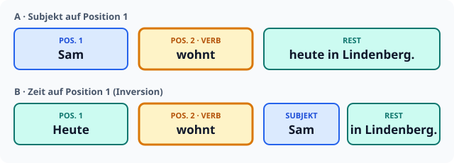

Media overview
All images, audio files and videos of this app with their source and licence.
Images

images/sentence-cards-v2.svg© CC0-1.0Used on: Verb-Second Word Order

images/sentence-cards-questions.svg© CC0-1.0Used on: Asking and Answering W-Questions

images/sentence-cards-bracket.svg© CC0-1.0
images/sentence-cards-aduso.svg© CC0-1.0